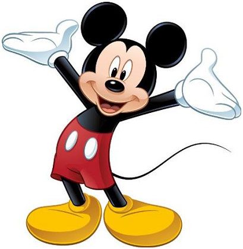

Mickey es el ratón más famoso que ha existido, siendo reconocido por millones en todos los continentes del mundo. El éxito de toda la industria de Disney se debe en gran medida a su personaje principal. Incluso la compañía lo ha dicho abiertamente: “No podemos olvidar nunca que todo esto se construyó por un ratón”.
El fenómeno del ratón es un caso sorprendente. Es un personaje que incluso a más de 80 años de su creación sigue sorprendiendo al mundo y que por su carisma se ha ganado los corazones de niños y adultos. Ha sido querido por muchos, incluyendo artistas, intelectuales y políticos.
La aparición del ratón por primera vez en 1928 marcaría un cambio en las caricaturas y también sería el inicio del gran éxito de la compañía Walt Disney Productions. Pero, ¿a qué se debe el éxito de su popularidad?
El ratón de los pantalones rojos y zapatos amarillos, cuyo primer nombre fuese Mortimer, fue pensado por Walt Disney en marzo de 1927 durante un viaje de Nueva York a Los Ángeles. Walt había perdido recientemente los derechos de la serie Oswald the Rabbit, así como un gran número de los animadores que trabajaban con él. Pero el cineasta declaró que ni eso le impidió perder las esperanzas.